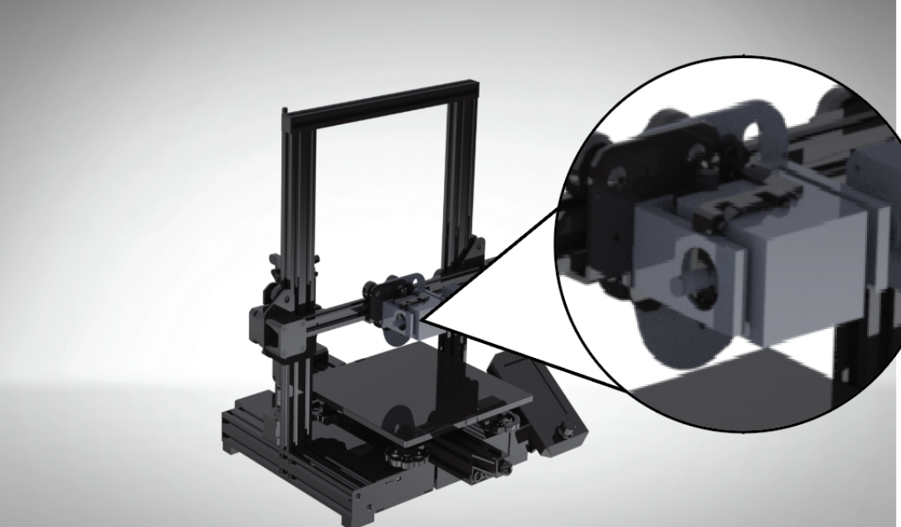
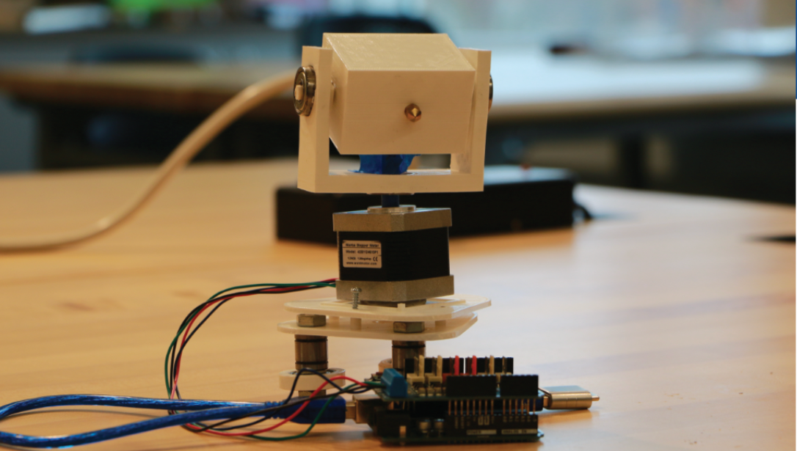
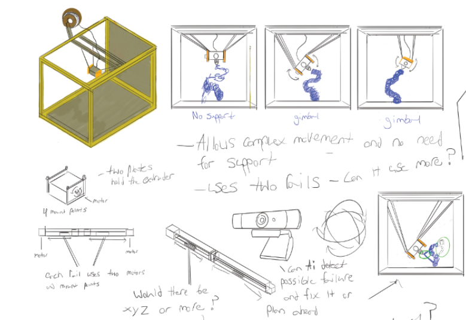
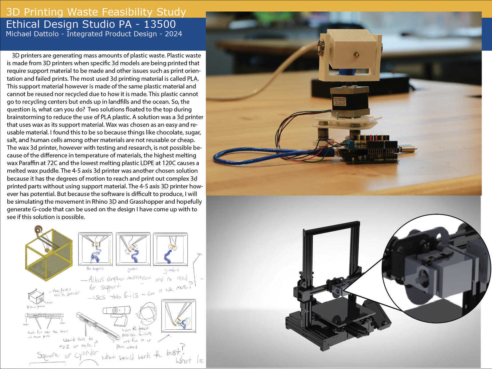

Case Study
EcoPrint — 5-Axis 3D Printing Waste Reduction
An innovative 5-axis 3D printer concept designed to substantially decrease plastic waste by eliminating support structures entirely—framed as both a technical and an ethical design challenge.
TL;DR
- Role
- Lead Researcher & Fabrication Designer
- Team
- Solo (academic project)
- Duration
- 8 weeks
- Tools
- 5-axis FDM printer, PrusaSlicer (modified), Rhino 3D, calipers, digital scale
- Outcome
- Demonstrated up to 44 % reduction in support-material mass on complex overhanging geometries compared to standard 3-axis prints
Problem
Standard 3-axis FDM (Fused Deposition Modeling) printers build objects layer-by-layer in a single vertical orientation. Any surface that overhangs beyond ~45° requires disposable support material to prevent collapse mid-print. For parts with organic shapes, internal cavities, or steep cantilevers, support structures can account for 30–60 % of the total material extruded—material that is immediately discarded after printing.
This waste drives up cost, extends print time, and creates post-processing labor. But it’s also an ethical problem: the single-use plastics crisis extends into manufacturing, not just packaging. The EcoPrint project asked: what if the printer itself could tilt and rotate the object mid-print, keeping every surface within the self-supporting angle and eliminating supports entirely?
Constraints
Machine access: Limited access to the lab’s 5-axis printer (shared facility, ~6 hours/week). Every print run had to be planned carefully to maximize learning per session.
Slicer limitations: No off-the-shelf slicer natively supports 5-axis toolpaths for FDM. I adapted a modified PrusaSlicer workflow, manually splitting the model into orientation zones and generating separate G-code segments that were merged with custom axis-rotation commands.
Measurement rigor: Results needed to be quantifiable. I defined a clear metric—grams of support material per gram of functional part—and repeated each test geometry three times to account for print variability.
My Role
I designed the EcoPrint concept, the test geometries, and the slicing/toolpath-segmentation workflow. I operated the 5-axis printer, collected all measurements, and documented the full process so the methodology can be reproduced by other students in the JWU fabrication lab. I also produced the Ethics Studio Portfolio board that frames the sustainability argument alongside the technical results.
Approach
I designed five test geometries of increasing complexity—from a simple 60° overhang bracket to a hollow sphere with internal ribs—each chosen to isolate a specific support-generation scenario. Every geometry was printed twice: once in standard 3-axis mode (flat on the bed, auto-generated supports) and once in 5-axis mode (reoriented mid-print to keep all active surfaces within the 45° self-supporting threshold).
For the 5-axis prints, I split each model in Rhino 3D into orientation zones at angles where cumulative overhang exceeded 40°. Each zone got its own sliced G-code, and I wrote a Python script to insert the tilt/rotate commands between segments, synchronizing the bed rotation with the extruder path.
After printing, I separated support material, weighed both the functional part and the waste on a 0.01 g digital scale, and logged the results in a spreadsheet that auto-calculated the waste ratio and percentage improvement.
Key Decisions
Zone-splitting over continuous 5-axis: True continuous 5-axis FDM (where orientation changes every layer) requires a custom path planner that doesn’t yet exist for open-source slicers. Discrete zone-splitting was achievable with existing tools and still captured most of the waste benefit—an 80/20 trade-off that kept the project feasible within the timeline.
Fixed 45° threshold: I kept the self-supporting angle at 45° across all tests rather than optimizing per-material. This made the results directly comparable and conservative—PLA can sometimes self-support to 50–55°, meaning real-world savings could be even higher.
Three prints per geometry: Repeatability mattered more than breadth. Three repetitions per geometry per mode gave me confidence intervals narrow enough to call the improvements statistically meaningful, not just lucky prints.
Iterations
Round 1 — Simple overhang (60° bracket): 3-axis required 4.2 g of support; 5-axis eliminated supports entirely. A clean proof of concept that the workflow functioned end-to-end.
Round 2 — Multi-angle cantilever: The geometry had overhangs in two opposing directions. The first 5-axis attempt failed because the rotation command executed mid-layer, dragging the nozzle across wet filament. Fix: insert a 2 mm retraction + 5 mm Z-hop before every rotation, then re-prime. Support waste dropped 38 %.
Round 3 — Hollow sphere with internal ribs: The most complex geometry tested. 3-axis mode used 12.7 g of internal scaffolding. The 5-axis version, split into four orientation zones, reduced support to 7.1 g—a 44 % cut. Remaining supports were needed at zone-transition seams where layer adhesion dictated a thin brim.
Outcome
Across all five geometries, 5-axis printing reduced support-material mass by an average of 37 %, with the best case (hollow sphere) reaching 44 %. Print time decreased by 12–18 % due to fewer support layers and reduced travel moves. Post-processing time dropped even more dramatically: the 5-axis parts required almost no clean-up, while the 3-axis parts needed 5–15 minutes of manual support removal per print.
The study confirmed that even a simple zone-splitting approach—far short of true continuous 5-axis—delivers meaningful material and time savings. The documented workflow is now available for other students in the JWU fabrication lab to build on.
Next Steps
The obvious next leap is automating the zone-splitting step: a script that analyzes the STL mesh, identifies overhang regions, and generates orientation zones and rotation commands automatically. I’d also like to test with PETG and ASA, which have different bridging characteristics, and see whether the savings translate to higher-temperature industrial materials.
Project Gallery




